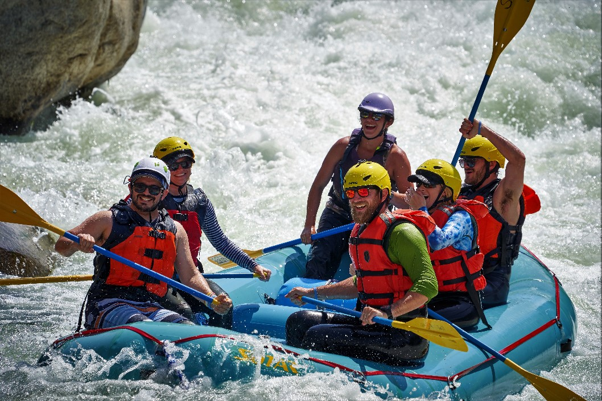
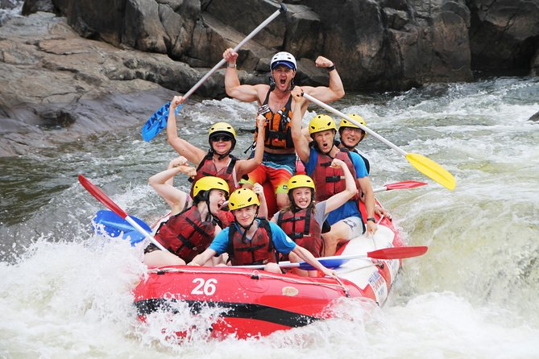
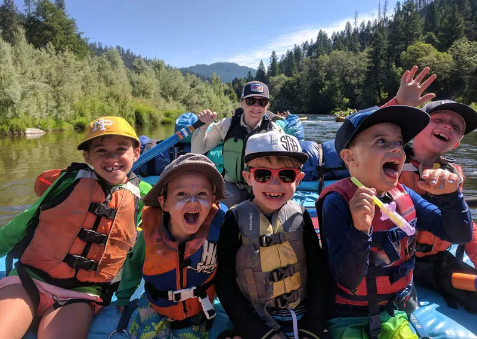

BOOK A TRIP NOW
Do you have any concern? Contact us now, our customer care we're Available 24/7 happy to help you.
Contact Us1-Day Full Trips
Click here for Details⇣
Raft through eight miles of wilderness country through the Snow Mountain National Park. Enjoy a fun-filled day of whitewater excitement. Keep your eyes peeled for nesting bald eagles and the millions of turtles that call themselves home on Cache Creek. Riverside picnic is included. The Upper Cache Creek is a Class III whitewater run through a volcanic canyon, accessible only by water. You’ll sense solitude and serenity as you guide your own raft through this remote volcanic canyon river. On your one-day whitewater rafting adventure, you will traverse through the rugged wilderness, towering canyons, and oak-studded meadows. Swift currents, big waves, plenty of sun and whitewater will ensure action-packed excitement not soon forgotten. This is a great way to spend a day. We are the oldest most popular originally owned outfitter on the Upper Cache Creek and one of the most reputable whitewater rafting companies in California with over 30 years of river running experience. We are the first company on the Upper Cache Creek to use top-of-the-line self-bailing rafts. We’ll ensure you have one of the most unique and memorable whitewater vacations. Lunch is a riverside picnic alongside the banks of Cache Creek: Turkey or ham, jack and cheddar cheese, fresh sourdough french bread, chips. Please remember to bring plenty of water and a small ice chest for your ride.
3-Days Full Trips
Click here for Details⇣
During our rafting journey we would pass Devprayag, which is one of the five holy prayags (confluences) on the Alaknanda river, and has great significance to the Hindu devotees. Our trips are operated in an eco-friendly manner, following leave no trace principles. The rafting expedition would be supported by experienced safety kayakers / river guides, and the team would be outfitted with good quality gear matching international standards. The camping experience would be complete with kitchen and mess facilities catering to good quality and nutritious freshly prepared meals. Day-1 Drive 90 kms from Rishikesh to Baagwan in the morning. After a comprehensive safety briefing and packing the bags on the raft, we head out on the water. We start the trip on the Alaknanda River as it enters the last canyon stretch with good whitewater, featuring rapids such as 'Baagwan's Pillow', 'The Deadly Duos' and more until we reach Devprayag. It is a mild section from here until the campsite with a few rapids where you can body surf, swim, relax and spot wildlife. Night Stay in Devprayag hotel/camps. Day-2 An easy day with small rapids. Great day to relax, soak in the sun, body surf and bird-watching. Raft time is approximately 35 km to Kaudiyala. Set up camp for the night on a beach at Kaudiyala or at some forest camp (whichever will be available at that time) Day-3 Raft down adrenaline pumping rapids like 'Daniel's Dip', 'The Wall', 'Three Blind Mice', 'Crossfire', 'Bodysurfing', 'Return to Sender', 'Roller Coaster', 'Golf Course', and lots of smaller ones too. We stop to have lunch and then continue to encounter the big rapids on the River Ganga. We end the trip just before the famous Laxman Jhula in Rishikesh.
Full Family Trips
Click here for Details⇣
You don’t have much time. No one does. It's why vacations are so important. You’ve got to make every second count. But you don’t want to be in “hurry-up and relax” mode the whole time. You want something to do with your family that everyone’s going to like. And it can’t be all tourist-trappy. You need some real-deal family vacation time. So what’s the perfect solution, you ask? A multi-day family rafting trip. Seriously. Scenery? It doesn’t get better than a whitewater river. Fun? Throw buckets of water on your kids all day… ‘nuff said. Adventure. Relaxation. Great food (no lie, the food is a highlight). A river trip has it all (1) Incredible value at an all-inclusive price (no extra fees for parking, meals, or ride tickets). (2) Getting hit with waves from all sides is ridiculously fun. (3) If they don't already, your kids will think you are the “GOAT” for booking a rafting trip (trust us, that’s a good thing). (4) There are pools between rapids for swimming, splash fights and relaxing. (5) Guides are the nicest, funniest, and according to just about any kid, hippest people on earth. (6) Food is somewhere between incredible and amazing. (7) It’s good for the spirit to spend time on moving water. (8) Two words you’ll never hear on a river trip: I’m bored. (9) Rapids come in all sizes; we take you to the ones that are family-size. (10) You will get at least one photo that will be a guaranteed Insta-hit. (11) The sound of rushing rapids + laughter is one your family will never forget. (12) The family that splashes together stays together. (13) You can “accidentally” dump your much-loved family members into the river. (14) Absolutely no iPods, iPads, iPhones, icomputers, or idistractions allowed. (15) If your kids gets dirty, just chuck them in the river.